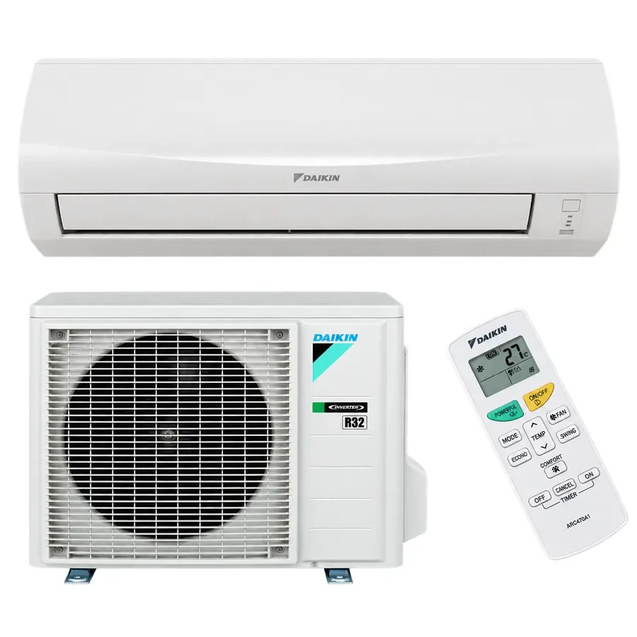

Daikin Sensira 2,5 kW
FTXF25 / RXF25 · für kleinere Räume
- ca. 2,5 kW Nennkühlleistung
- grobe Orientierung: etwa 20–30 m²
- Kühlen und Heizen
- bis A++ im Kühlbetrieb
- leiser Betrieb bis etwa 20 dB(A)
- R32-Kältemittel
Daikin Sensira Split-Klimaanlagen zum effizienten Kühlen und Heizen. Klima Claro unterstützt Sie bei Auswahl, Verkauf und Koordination der fachgerechten Montage in München, Ebersberg und Umgebung.

Für die meisten einzelnen Wohnräume sind zwei Leistungsklassen besonders interessant. Die richtige Auswahl richtet sich nicht nur nach Quadratmetern, sondern auch nach Sonneneinstrahlung, Dämmung, Fensterflächen und Raumhöhe.
FTXF25 / RXF25 · für kleinere Räume
FTXF35 / RXF35 · mehr Leistungsreserve
Die Daikin Sensira ist eine kompakte Split-Klimaanlage für Wohnräume, Schlafzimmer, Homeoffice und kleinere Gewerberäume. Daikin nennt für die Sensira-Baureihe saisonale Effizienzwerte bis A++ im Kühlbetrieb und einen besonders leisen Betrieb bis etwa 20 dB(A).
Der Inverter passt die Verdichterleistung kontinuierlich an den tatsächlichen Kühl- oder Heizbedarf an. Dadurch kann die gewünschte Raumtemperatur gleichmäßiger gehalten werden und unnötige Start-Stopp-Zyklen werden reduziert.
Eine Daikin Sensira kann nicht nur im Sommer kühlen, sondern auch zum Heizen eingesetzt werden. Damit eignet sich das System auch für die Übergangszeit.
Die genannten Sensira-Geräte verwenden R32. Die Installation und kältetechnische Inbetriebnahme müssen entsprechend den geltenden gesetzlichen Vorgaben durch einen entsprechend qualifizierten Fachbetrieb erfolgen.
Klima Claro unterstützt bei Beratung, Geräteauswahl und Verkauf Ihrer Daikin Klimaanlage. Die Montage, der Anschluss und die kältetechnische Inbetriebnahme erfolgen durch entsprechend qualifizierte Partnerbetriebe vor Ort.
Damit wir die Montagesituation möglichst genau einschätzen können, senden Sie uns am besten die Raumgröße, Ihre Postleitzahl sowie Fotos vom geplanten Standort des Innen- und Außengeräts und vom möglichen Leitungsweg.
Unser Schwerpunkt liegt im Großraum München und im Landkreis Ebersberg. Die konkrete Verfügbarkeit eines passenden Partnerbetriebs wird projektbezogen geprüft.
Als grobe Orientierung ist die Sensira 2,5-kW-Klasse für kleinere Räume von etwa 20 bis 30 m² interessant. Entscheidend sind zusätzlich Fensterflächen, Dämmung, Sonneneinstrahlung und Raumhöhe.
Für mittelgroße Räume kommt häufig die 3,5-kW-Klasse infrage. Bei Dachgeschoss, großen Fensterflächen oder hoher Sonneneinstrahlung sollte die Wärmelast genauer geprüft werden.
Ja. Die Sensira kann je nach Ausführung sowohl kühlen als auch heizen und lässt sich dadurch auch in der Übergangszeit nutzen.
Daikin nennt für die Sensira-Innengeräte im besonders leisen Betrieb Werte bis etwa 20 dB(A), abhängig von Modell und Betriebsstufe.
Daikin gibt für die Sensira saisonale Energieeffizienzwerte bis A++ im Kühlbetrieb an.
Die hier dargestellten Sensira-Geräte arbeiten mit dem Kältemittel R32.
Die kältetechnische Installation und Inbetriebnahme muss entsprechend den geltenden gesetzlichen Vorgaben durch einen entsprechend qualifizierten bzw. zertifizierten Fachbetrieb erfolgen.
Der Gesamtpreis hängt unter anderem von Geräteleistung, Leitungsweg, Wandaufbau, Außengerät-Standort, Elektroarbeiten und Montagesituation ab. Über den Klima-Claro-Konfigurator können Sie zunächst einen unverbindlichen Richtpreis ermitteln.
Sie möchten eine Daikin Klimaanlage für Wohnung, Haus oder Büro? Senden Sie uns Raumgröße, Postleitzahl und Ihre Montagesituation. Wir unterstützen bei der Auswahl zwischen 2,5 kW und 3,5 kW.